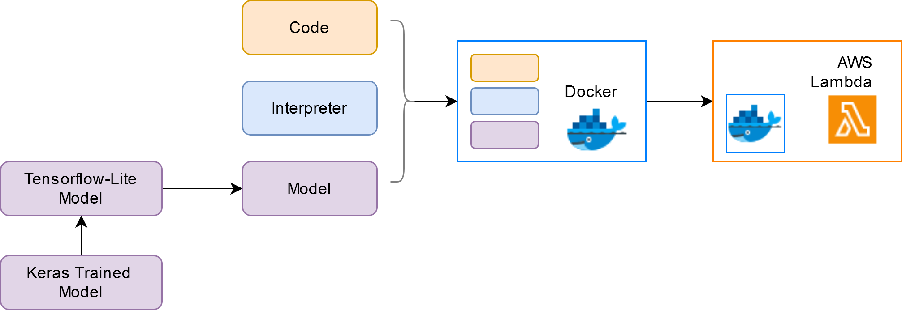
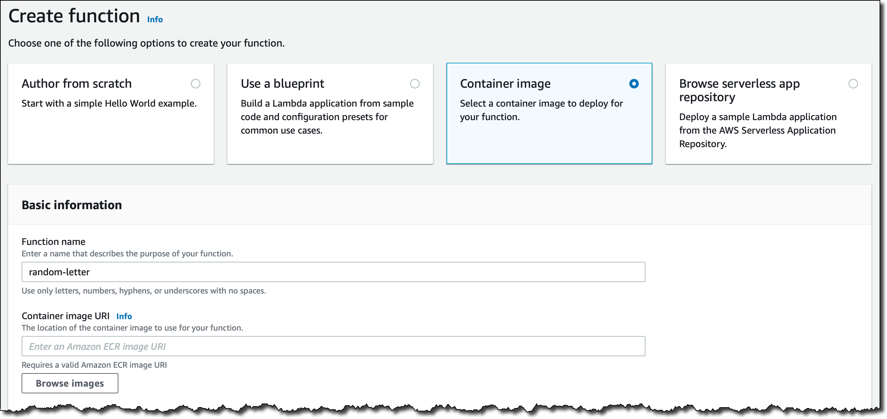

A Beginner’s Guide to Deploying Tensorflow Models on AWS Lambda (Free-Tier)
What’s This Post About
If you are a data scientist, have no idea about cloud, and want to do something hands-on instead of courses- you are in the right place.
In this blogpost, we will signup on AWS Free-tier account and use the Lambda service to deploy a trained ML model within the free-tier limits. The code used in this post is available in this repo.
Pre-requisites:
You should be able to know how to train a machine learning model. Here, we are taking an already trained keras model and start from that point. It is a CNN model that classifies given image into either
catordog. But if you are interested in the model training aspect, check out this kaggle notebook!You should be familiar with basics of Docker and REST API.
The contents of this blogpost:
- Take the trained Keras Model, and convert to tf-lite format (Why? Discussed later.)
- Write and test the inference functions for tf-lite model.
- Create a docker image using an AWS Lambda image as base, and test it out.
- Signup for an AWS Free-tier account. Configure the AWS CLI and ECR (Discussed later.)
- Create an AWS Lambda function using the docker image. Test it out.
- Create an API Gateway and expose it. That is it!
A visual depiction of the flow:

This process is taken from the chapter 9 of the free course “ML Zoomcamp” by Alexey Grigorev, with some modifications. Follow the videos if you want a detailed walkthrough.
What is AWS Lambda / Serverless
AWS Lambda is a compute service that lets you run code without provisioning or managing servers.
All it asks is for you to bring the code- and the service will do everything else- provisioning servers, managing them, auto-scaling them if the demand increases, and shutting them off if they are not in use, or restarting them. Since we don’t need to worry at all about servers, it is also called serverless.
In the ML scenario, we will bring the code and the model to the service, and it will produce the predictions of our inputs. Instead of giving the code and the model directly, we will first package them inside a docker image, and use the image to deploy on Lambda.
At the end of this post, we can give a URL of an image to a REST API endpoint, and get back the image classification result.
Conversion to TF-Lite
Why TF-Lite
Our starting point is a file called cats_and_dogs.h5 which is a keras model trained to classify given image into cat or dog. We can easily load it into our environment using the keras library.
import tensorflow
model = tensorflow.keras.models.load_model("cats_and_dogs.h5")However, this may not be the best case for deploying the model. Installation of tensorflow itself can take up a LOT of memory. Importing the library also adds latency. We only need to do inference, while the library contains tools for many operations like training, etc. AWS Lambda does not support GPUs, so we don’t those sections of codebase either.
Other constraints are the free-tier limits of AWS: Since we are deploying in the cloud, the sizes of our docker image need to be under 500MB.
One way to remove the boilerplate from the libraries is to convert the model to tf-lite and use the tf-lite library, which we will be employing here.
Note that AWS Lambda only supports CPUs, not GPUs. So we need to deploy models only if they can perform well on CPUs.
While TF-Lite supports GPUs, if your deployment is in a GPU-environment, you might be better off with other well-supported compilers like TensorRT.
Conversion
The code for conversion is pretty straightforward:
import tensorflow.lite as tflite
converter = tflite.TFLiteConverter.from_keras_model(model)
tflite_model = converter.convert()
with tf.io.gfile.GFile('artifacts/cats_and_dogs.tflite', 'wb') as f:
f.write(tflite_model)The tricky part is feeding the input and retrieving the output. Fortunately its all wrapped up neat here:
def load_tflite():
"""
this function is used to load the tflite model and initialize the
interpreter, and also return the input and output indexes
"""
interpreter = tflite.Interpreter(model_path='cats_and_dogs.tflite')
interpreter.allocate_tensors()
input_details = interpreter.get_input_details()
input_index = input_details[0]['index']
output_details = interpreter.get_output_details()
output_index = output_details[0]['index']
return interpreter, (input_index, output_index)
def predict_with_tflite(interpreter, indexes, img):
"""
this function takes the interpreter, indexes and input image as input
performs the inference, does some postprocessing and returns the result.
"""
interpreter.set_tensor(indexes[0], img)
interpreter.invoke()
preds = interpreter.get_tensor(indexes[1])
return postprocess(preds)Another tricky part is the pre-processing function. During training the model, we simply used the keras.preprocessing module to perform the pre-processing. Since we are not installing keras or tensorflow, how can we do the pre-processing?
Its easy, we do it ourselves. We load the image using PIL library, convert to numpy array, and scale it. The dependencies are light: PIL, and NumPy.
Now, we have the complete code for inference (check the github repo)- including the pre-processing steps, and prediction with the tf-lite model.
The Docker Image for Lambda Function
Now, we will be creating a docker image to be used in lambda function. (Don’t worry about the AWS Account yet.)
While preparing a docker image we generally start with a “base image”. This often is based on Ubuntu. But this will not work here. We need to use the official AWS Lambda as base image which is based on CentOS and includes other artifacts related to Lambda. We will prepare our image from this base image, and upload to AWS Lambda for deployment.
How will we prepare the dockerfile?
- Select the appropriate base image
- Install the dependencies
- Copy the lambda handler file
- Copy the artifacts (model file etc.)
- Specify the CMD command
Creating the Lambda Handler File
Before we start preparing the Dockerfile, we need to write a python script lambda_function.py that will perform all the pre-processing steps, load the model and do prediction. This is going to be the entrypoint script for the Lambda function.
This script should have a function called lambda_handler that should take the input from API and return result as json.
def lambda_handler(event, context):
url = event['url']
X = load_image(url)
result = predict_with_tflite(X)
return resultHere, load_image contains the preprocessing logic and predict_with_tflite contains the prediction steps. Check the complete lambda_function.py file in the github repo.
Resolving Some Errors
While installing the dependencies, you might come across some errors. This is related to the library tf-lite, the PyPI binaries are based on Ubuntu/Debian OS and not supported for CentOS. Hence, you will have to install this library using wheel files compiled for that OS- which are fortunately available for us on github, compiled by Alexey Grigorev. A copy of the file is also present in the repo we are working from.
Build the Docker Image
Once the required code and model files are ready, we start building the docker image. The sequence of steps is simple:
FROM public.ecr.aws/lambda/python:3.8
COPY artifacts/tflite_runtime-2.7.0-cp38-cp38-linux_x86_64.whl .
RUN pip3 install tflite_runtime-2.7.0-cp38-cp38-linux_x86_64.whl --no-cache-dir
RUN pip install requests Pillow
COPY artifacts/cats_and_dogs.tflite .
COPY artifacts/lambda_function.py .
CMD ["lambda_function.lambda_handler"]We build the image using
docker build -t cats_and_dogs .And start running the container using
docker run -it --rm cats_and_dogs:latest -p 8080:8080 Testing the Docker Application
Now, the docker container is running, and presumably our model within is running as well. But how do we use it or test it if it’s working?
We send a request using the python requests library. If you go to our lambda handler script, the event argument is basically the json that we are sending over using a POST request. We retrieve the URL from the json payload, process it to get the prediction, and return the result as json response. Let’s look at the code:
import requests
url = "http://localhost:8080/2015-03-31/functions/function/invocations"
# this is how the URL for AWS Lambda always looks like
# this is the URL where the application inside docker container is listening for requests
data = {"url": "https://t4.ftcdn.net/jpg/00/97/58/97/360_F_97589769_t45CqXyzjz0KXwoBZT9PRaWGHRk5hQqQ.jpg"}
# this is the input we want to give to the lambda_handler script
results = requests.post(url, json=data).json()
# this is the result after prediction and post-processing.
print(results)If you are seeing a dictionary printed that contains the probabilities of the model classes, the docker container is running successfully! Congratulations - all our offline work is complete. All that’s left is signing up and moving this image to cloud.
Note that we did not install any client like FastAPI/Flask, yet we are able to listen to a REST API. The base docker image likely has a built-in server.
Setup your Free-tier AWS Account
Signup for a Free-tier Account
If you don’t have any experience in handling cloud, and want to learn- AWS Free-tier is a good option. But it can also be dreaded option, since some might be afraid of racking up large costs accidently. However if you understand the limits, it’s very easy to stay below the specified thresholds and still learn the nuts-and-bolts of AWS using toy projects.
Before you start creating a free-tier account, it’s best if you go through which services are free and what are their limits- https://aws.amazon.com/free/. Also go through a video example of setting up an account so there’s less surprises.
Once the setup is complete, there’s still more steps to do for configuring your workspace.
Creating an IAM User
Once you have the account set up, you will have one user called ‘root’. However it’s a best practice to create custom users called “IAM Users” for development activity. Create one such user with admin access, and create an access key for this user. We will do our development through this access key.
Setup AWS-CLI
We can use AWS through our browser and the UI, but the best Developer Experience is through AWS Command Line Interface. This allows us to work from the terminal. Setting it up is easy,
pip install awscliConfigure it using aws configure and input the access ID and secret access keys you generated earlier. Input a default region (e.g. us-east-1, ap-south-1) and default format (e.g. json).
Create and Link Amazon ECR
ECR is Amazon’s container registry, where we can upload docker images. These images we can then use for various applications like AWS Lambda or AWS EKS etc. We will setup ECR and connect it our docker client (Docker Desktop), so that we can upload docker images from docker to ECR.
- We first create an ECR Repo, and note down the URI
aws ecr create-repository --repository-name cats_and_dogs_images
You can go to the AWS dashboard in your browser and check if the repository has been created.
- Authenticate docker to work with ECR.
$ $(aws ecr get-login)For windows, Step2 might result in an error. This solution from stackoverflow worked for me.
Following these steps, Docker is successfully authenticated with AWS-ECR.
Upload the Docker Image to ECR Repo
- Tag the image of interest with the remote repository URI
docker tag cats_and_dogs:latest ${REMOTE_URI}- Push to ECR
docker pushCheck in browser if the image has been published.
Creating the Lambda Function
Now, your AWS Account is set up and you’ve also uploaded the docker image to ECR. In this section we will use the image to create a lambda function, and also set an API trigger using API Gateway.
Creating a Lambda function is easy, from the AWS dashboard we go to AWS Lambda -> Create Function -> From Image -> Select the Uploaded image.

Test the Image
By default the timeout is 3s, which we need to increase to 30s in the settings. This is because the model loading for the first time may take upto 7s. We can test the lambda function by giving the json payload in the test area.
If you get the familiar output of classes and probabilities, your Lambda function is working!
However, currently you can only give the input through the test section. How will the users access the function? How will they connect to Lambda? We can use Amazon’s API Gateway for that.
Create a API Gateway
From Dashboard, go to API Gateway -> REST API -> new resource. Here you define the endpoint name. Then, define the request type (i.e. POST) In POST, integration type should be changed to Lambda function. Give the region name and name of the lambda function we created earlier.
So you have now exposed the Lambda function using a REST API! You can test it there itself in the request body section.
But this API Endpoint is still private- we can open it up to other users by going to Actions -> Deploy API. We copy the URL, and test it using python requests library.
And this is how we deploy an ML model using AWS Lambda!